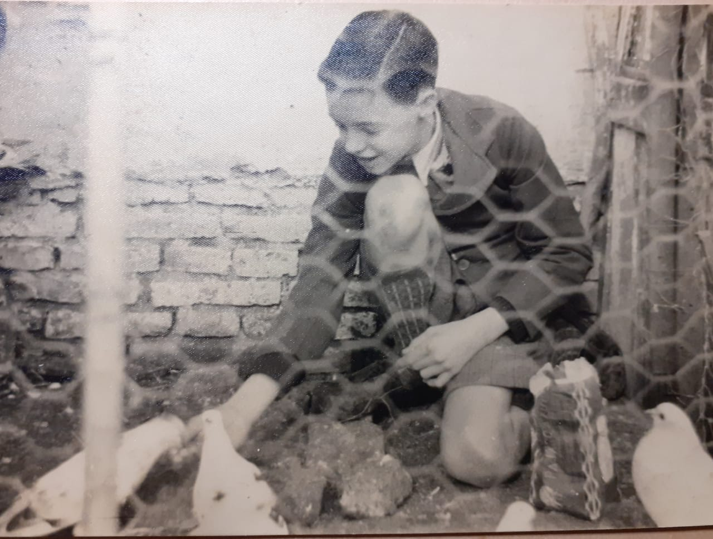
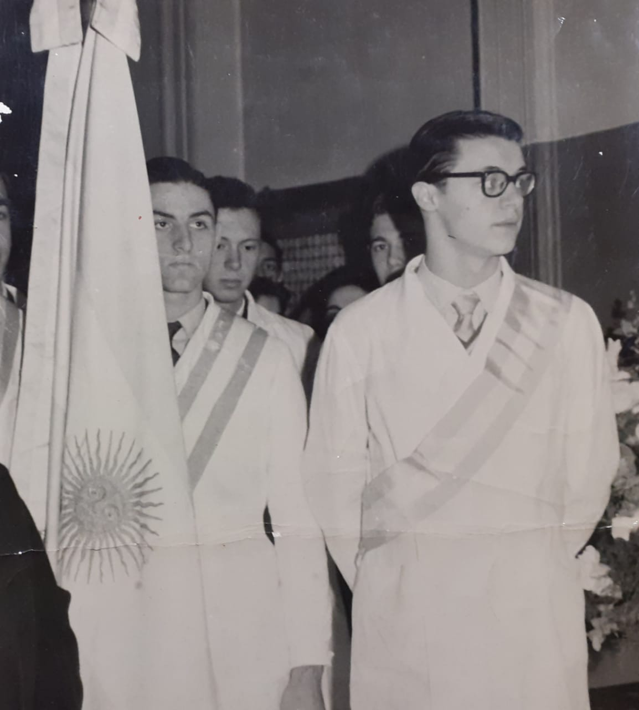

Mi abuelo nació el 2/7/1941 en Lincoln Provincia de Buenos aires donde vivió por 5 años, luego vivió un tiempo en capital, específicamente en la zona de Mataderos hasta los 20 años, luego se mudó a Lomas Del Mirador para después de casarse a sus 29 años y mudarse a Capital Federal, Parque Patricios y por ultimo de allí a Ramos Mejía donde viven actualmente hace aproximadamente 42 años con mi abuela. De chico era muy travieso de hecho una vez como estaba enojado con sus padres en la chacra en donde estaban se fue pedaleando el solo en su triciclo a la edad de 4 años escapandose asi de la chacra por un camino estrecho hasta llegar a la vía de un tren donde gracias a dios alguien lo puedo ayudar y lo llevo con sus padres y ahora lo recuerdan como una anécdota muy graciosa. también tuvo siempre un encanto por los animales que lo llevo a tener varias mascotas incluidas palomas.
En la escuela fue un gran alumno con buenas notas y promedios llegando en 5to año de la escuela normal de prosfesores Mariano Acosta a ser abanderado por el segundo mejor promedio de su curso.
